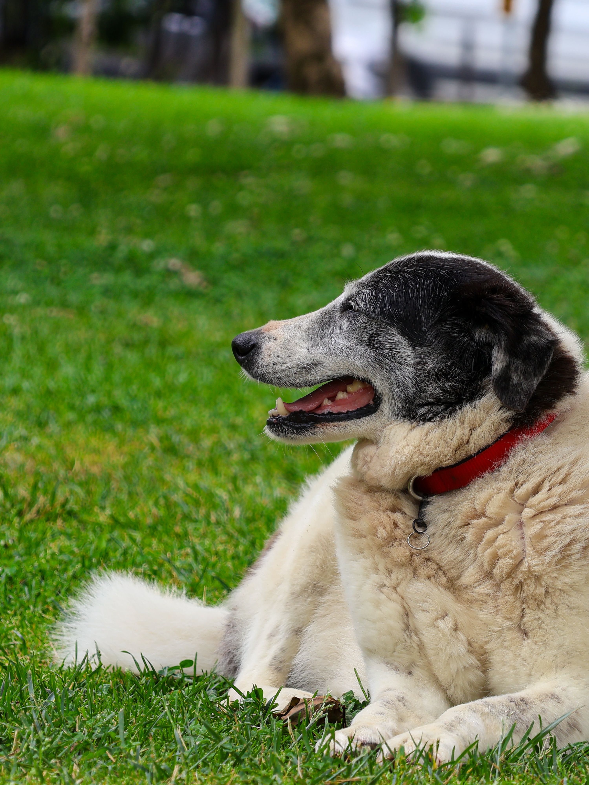
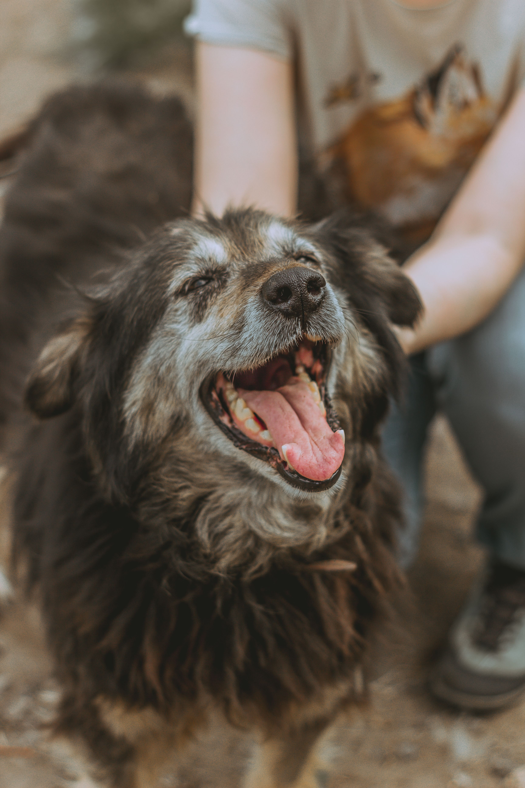
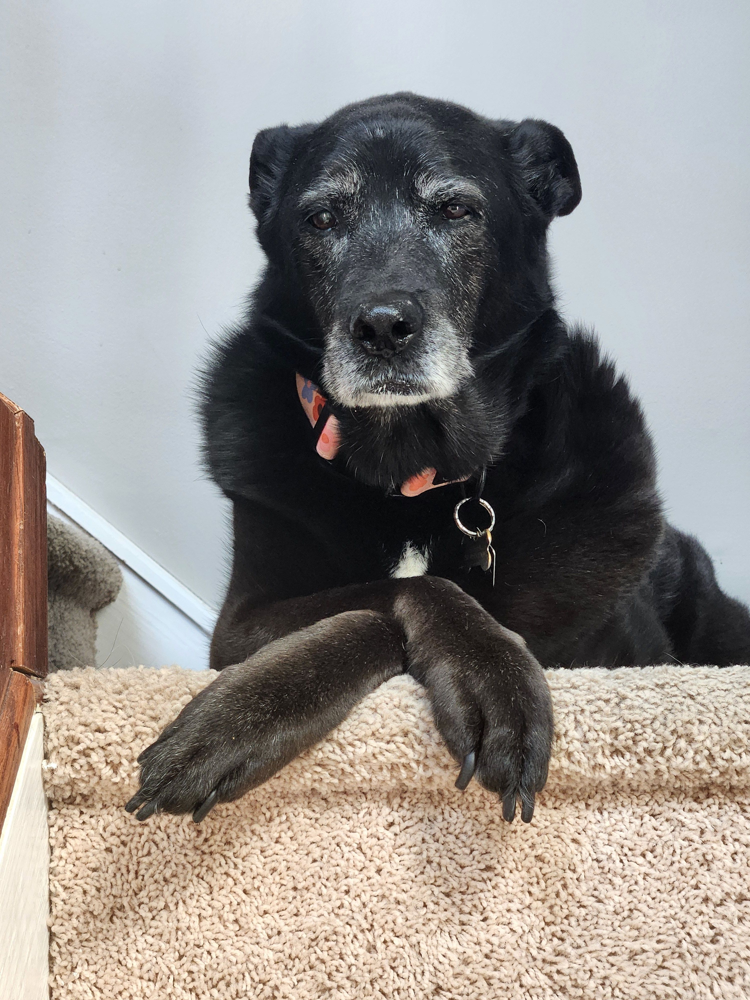
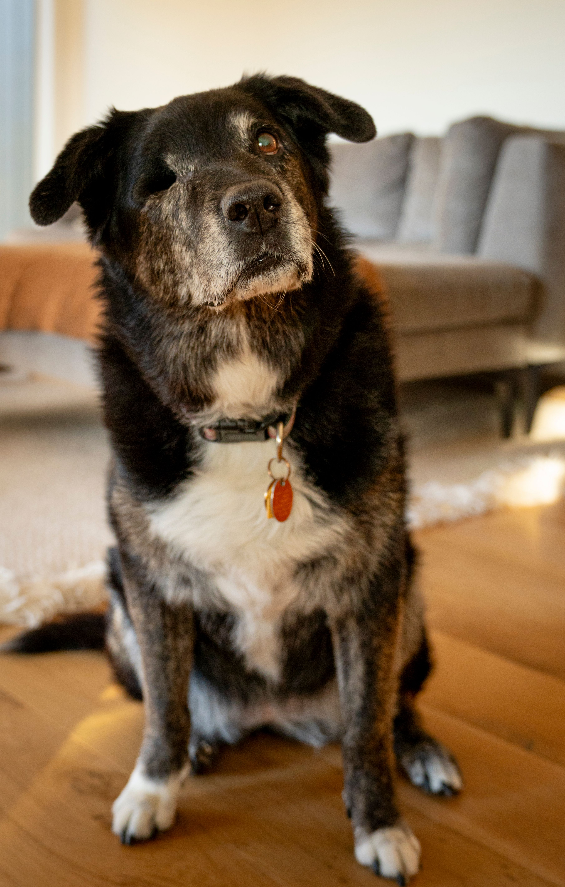

Sebasian is a 10 year old family dog. He's very protective of his family and love lounging on the couch to watch TV.

Baja Blast is a 10 year old dog with a heart of gold. She love cuddling with her family and giving kisses. She's very friendly towards new people, too.

Blinky looks very stoic, but this 9 year old is anything but. He's a bit of a troublemaker and sometimes gets his nose into places it doesn't belong, but he's very sweet and playful for his age.

Dipper is a 7 year old dog who loves going outside. He'll go just about anywhere with you, whether it be hiking, the grocery store, or even to the bathroom. He's friendly towards others, but not recommended living with children or other animals.
Couldn't find what you're looking for? While we do encourage the adoption of senior pets, we also encourage giving any pet of any age a new home. We recommend going to a local shelter, or searching on websites such as PetFinder.